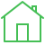

Mission og Mål
- 


Kilder
Missionen for Anima er at forbedre levevilkårene for dyr og beskytte dem mod mishandling og misbrug. Dette opnås gennem en række målrettet arbejde:
Lobbyarbejde: Anima arbejder sammen med beslutningstagere og politikere for at påvirke lovgivning og politiker, der vedrører dyrevelfærd. Organisationen er en stærk talsmand for styrkelse af dyreværnslove og reguleringer.
Oplysninger og Uddannelse: Anima er dedikeret til at øge bevidstheden om dyrevelfærdsspørgsmål. De udgiver materialer, tilbyder uddannelse og deltager i kampagner for at informere folk om, hvordan de kan bidrage til at beskytte dyrene.
Redningsaktioner: Anima deltager i redningsaktioner for at redde dyr i nød, herunder mishandlede husdyr og vilde dyr i fare. De arbejder tæt sammen med myndighederne og frivillige for at redde og pleje dyr i nød.